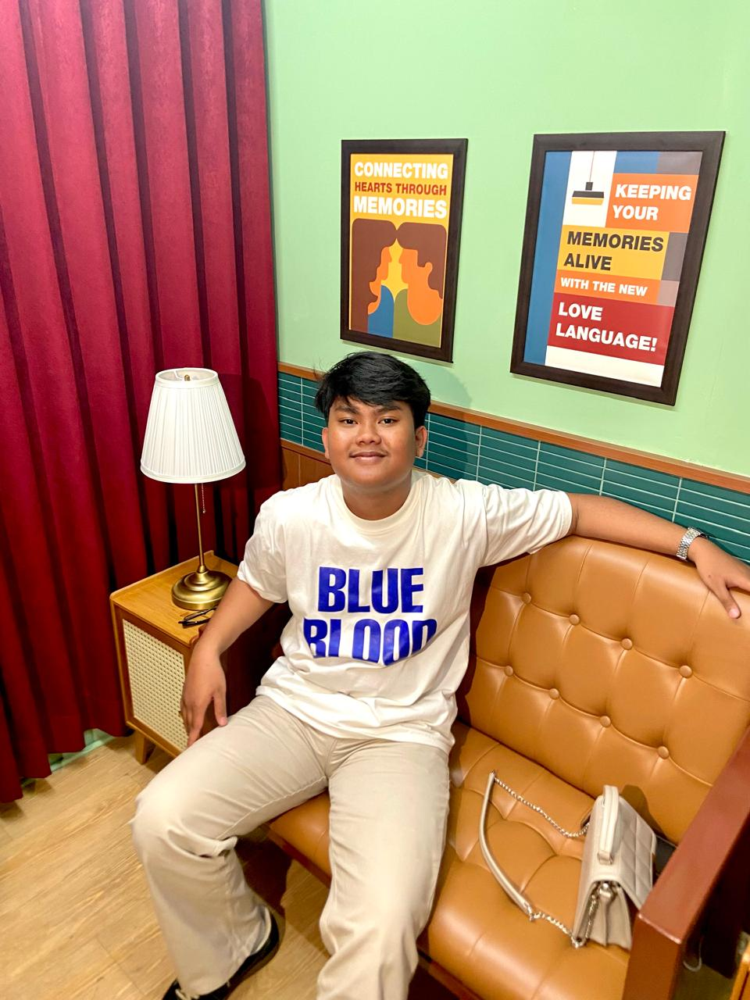

Rutinitas
Hari yang sederhana, langkah yang berarti.
Ini contoh rutinitas harian yang berusaha aku jalani. Jadwal bisa berubah menyesuaikan kegiatan kuliah dan kebutuhan.
Rutinitas harian
Membagi waktu dengan lebih baik.
Pagi — Memulai hari
Bangun, bersiap, sarapan, dan melihat agenda hari ini.
Siang — Kuliah dan belajar
Mengikuti kegiatan kuliah dan menyelesaikan tugas yang perlu dikerjakan.
Sore — Waktu produktif
Berlatih coding, membaca materi, atau mengembangkan proyek kecil.
Malam — Istirahat
Mengevaluasi kegiatan hari ini, bersantai, lalu menyiapkan rencana untuk besok.
